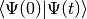

Using WaveBlocks for performing simulations¶
In this chapter we show how to use the WaveBlocks framework for performing simulations. The process is always the same and consists of a preprocessing step, a main step and a post-processing step. The preprocessing step is where we configure the simulations we want to perform. Then there is the main step where the simulations are run. Finally, there follows a postprocessing step where we evaluate the data and (optionally) create visualization. We will see that the post processing step consists of many small and independent sub-steps reflecting the various options of what to do with the data obtained.
Set up and run a simulation¶
Let’s first show how to set up a single simulation. The basic work-flow consists of several steps. First we have to prepare the simulation, then we run the main simulation program. This gives us a data file with the simulation results. Then we can apply various post processing steps, for example the computation of energies, plotting of norms and many more.
The first step is to create a configuration file and set the simulation parameters.
We use the file examples/harmonic_oscillators/harmonic_1D_p.py from the examples
collection. The full content of this file is printed below:
algorithm = "hagedorn"
propagator = "semiclassical"
splitting_method = "Y4"
T = 12
dt = 0.01
dimension = 1
ncomponents = 1
eps = 0.1
potential = "quadratic"
# The parameter set of the initial wavepacket
Q = [[1.0]]
P = [[1.0j]]
q = [[1.0]]
p = [[0.0]]
S = [[0.0]]
# What it takes to specify a wavepacket!
wp0 = {
"type" : "HagedornWavepacket",
"dimension" : 1,
"ncomponents": 1,
"eps" : eps,
"Pi" : [q,p,Q,P,S],
"basis_shapes" : [{
"type" : "HyperbolicCutShape",
"K" : 10,
"dimension" : 1
}],
"coefficients" : [[ ((0,), 1.0) ]],
"innerproduct" : {
"type" : "HomogeneousInnerProduct",
"delegate" : {
"type" : "DirectHomogeneousQuadrature",
'qr': {
'type': 'TensorProductQR',
'dimension': 1,
'qr_rules': [{'dimension': 1, 'order': 14, 'type': 'GaussHermiteQR'}]
}
}
}
}
# Which wavepackets are initial values
initvals = [ wp0 ]
leading_component = 0
# How often do we write data to disk
write_nth = 5
matrix_exponential = "pade"
Now we have to run the main simulation program. This is done by the following command:
Main.py harmonic_1D_p.py
where we have to provide the configuration file as command line option of the Main.py
program. The Main.py command (like all other commands) supports an online help listing
the available options and switches:
Main.py --help
usage: Main.py [-h] [-o OUTPUTFILE] [-r [RESULTSPATH]] parametersfile
positional arguments:
parametersfile The simulation configuration parameters file.
optional arguments:
-h, --help show this help message and exit
-o OUTPUTFILE, --outputfile OUTPUTFILE
The data file to write the transformed data.
-r [RESULTSPATH], --resultspath [RESULTSPATH]
Path where to put the results.
When the program terminates, it leaves a file called simulation_results.hdf5 which
contains all the simulation data. This hdf results file is stored in the local
directory where the script was called (unless specified otherwise by the -o or -r
switches) and not in the directory where the configuration file was loaded from.
The script refuses to run if it would overwrite an existing hdf file.
This measure is in place to prevent you from data loss.
We can use the program hdfview for example to gain some insight of the contents
of the file. More tools for manipulating hdf files can be found on the web-page
of the [hdfgroup]. Two very useful command line tools are h5ls and h5dump.
| [hdfgroup] | http://www.hdfgroup.org/products/hdf5_tools/ |
Computing more data¶
After we have run a simulation the output file simulation_results.hdf5
contains all data that were computed during the simulation. This is for example
wave-function values or wave-packet parameters etc. depending on the exact setup
run. Usually we want also to compute some properties of the time evolution. This
is done in a second step called post processing of the data. There are several
scripts in the scripts/ sub-directory which post-process the simulation data.
Assume we want to compute the norms and energies of the wave function during its
time evolution. These properties are not computed while running the simulation,
but we can get them easily from the stored information. The following sections
will show how to compute these data and store them in the output file
simulation_results.hdf5 too.
All post-processing and plotting scripts can be called with an argument --help
and provide modern command line switch handling:
ComputeNorms.py --help
and will print a help message:
usage: ComputeNorms.py [-h] [-d [DATAFILE]] [-b [BLOCKID [BLOCKID ...]]]
[-r [RESULTSPATH]] [-noet]
optional arguments:
-h, --help show this help message and exit
-d [DATAFILE], --datafile [DATAFILE]
The simulation data file.
-b [BLOCKID [BLOCKID ...]], --blockid [BLOCKID [BLOCKID ...]]
The data block to handle.
-r [RESULTSPATH], --resultspath [RESULTSPATH]
Path where to put the results.
-noet, --noeigentransform
Disable transformation of data into the eigenbasis
before computing norms.
Norms¶
Computing norms is trivial and fast. Just run the script:
ComputeNorms.py
This will compute the norms of all wave-packets or wave functions
depending on what the simulation setup was and what is already stored
in simulation_results.hdf5.
Energies¶
Asking for the energies is almost equally trivial as computing norms. All we need is to run:
ComputeEnergies.py
which will compute kinetic and potential energies.
Autocorrelations¶
The computation of auto-correlations is a bit more complicated. What we want to compute is the following overlap integral (here discussed in case of wave-packets):

which compares the wave-packet at time  with the initial value
with the initial value
 at time 0. Because this involves wave-packets at two different
times we need a specialized quadrature to get accurate results. We have to tell
the script which quadrature we would like to use. This is done best by adding a
top-level snippet like the following to the original simulation setup
configuration before the simulation is run. This will choose the
at time 0. Because this involves wave-packets at two different
times we need a specialized quadrature to get accurate results. We have to tell
the script which quadrature we would like to use. This is done best by adding a
top-level snippet like the following to the original simulation setup
configuration before the simulation is run. This will choose the
NSDInhomogeneous quadrature transformation using
GaussHermiteOriginalQR with 4 nodes and is for a one-dimensional
setup:
# Configurations needed for computation of observables
observables = {
"autocorrelation" : {
"innerproduct" : {
"type" : "InhomogeneousInnerProduct",
"delegate" : {
"type" : "NSDInhomogeneous",
"qr" : {"dimension": 1, "order": 4, "type": "GaussHermiteOriginalQR"}
}
}
}
}
Warning
It is essential to take GaussHermiteOriginalQR as quadrature rule
used by the NSDInhomogeneous transformation.
As a second example we show the corresponding snippet in case of a three dimensional simulation setup:
# Configurations needed for computation of observables
observables = {
"autocorrelation" : {
"innerproduct" : {
"type" : "InhomogeneousInnerProduct",
"delegate" : {
"type" : "NSDInhomogeneous",
"qr": {
"type": "TensorProductQR",
"dimension": 3,
"qr_rules": [
{"dimension": 1, "order": 5, "type": "GaussHermiteOriginalQR"},
{"dimension": 1, "order": 5, "type": "GaussHermiteOriginalQR"},
{"dimension": 1, "order": 5, "type": "GaussHermiteOriginalQR"}],
}
}
}
}
}
The only thing we have to do then is to call the corresponding post-processor script:
ComputeAutocorrelation.py
Wave-packet sampling¶
If we made a simulation with wave-packets only and want to sample them on a regular grid for example for plotting then there is a script for this purpose:
ComputeEvaluateWavepackets.py --help
usage: ComputeEvaluateWavepackets.py [-h] [-d [DATAFILE]]
[-b [BLOCKID [BLOCKID ...]]]
[-p [PARAMETERSFILE]] [-r [RESULTSPATH]]
[-noet]
optional arguments:
-h, --help show this help message and exit
-d [DATAFILE], --datafile [DATAFILE]
The simulation data file.
-b [BLOCKID [BLOCKID ...]], --blockid [BLOCKID [BLOCKID ...]]
The data block to handle.
-p [PARAMETERSFILE], --parametersfile [PARAMETERSFILE]
The configuration parameter file.
-r [RESULTSPATH], --resultspath [RESULTSPATH]
Path where to put the results.
-noet, --noeigentransform
Disable transformation of data into the eigenbasis
before computing norms.
Eigentransformations¶
For potentials with multiple energy levels it matters in which basis we compute observables. Since the simulation is done in the canonical basis and the observables usually should be computed in the eigenbasis there is a transformation involved. The scripts shown above do this transformation internally and there is no need to worry.
However, in case we explicitly do not want the transformation to take place
(for example when working with single-level potentials) there are suitable
command line switches -noet in the post-processing scripts.
Explicit Eigentransformation¶
In case we want to convert all the simulation data (think: wave-function values or wave-packet data) once to the eigenbasis there is this script:
ComputeTransformToEigen.py --help
According to its help text:
usage: ComputeTransformToEigen.py [-h] [-i INPUTFILE] [-o OUTPUTFILE]
optional arguments:
-h, --help show this help message and exit
-i INPUTFILE, --inputfile INPUTFILE
The data file to read the data from.
-o OUTPUTFILE, --outputfile OUTPUTFILE
The data file to write the transformed data.
it will read the input file simulation_results.hdf5 and write output into a
new data file. A typical invoke could look like:
ComputeTransformToEigen.py -i simulation_results.hdf5 -o simulation_results_eigen.hdf5
Visualization¶
The post processing step usually splits into two sub-steps. First we compute
additional data and then we visualize these data. The two sub-steps are performed
by individual scripts. All these scripts optionally take the file-name or
file-path of the simulation_results.hdf5 as a further command line argument.
In this section we look at the plotting scripts used to visualize
common aspects of the simulated objects.
Plotting Observables¶
For plotting the usual observables like norm, energy and autocorrelation the following scripts can be used:
PlotNorms.py
PlotEnergies.py
PlotAutocorrelations.py
Plotting Wavepackets¶
Given a Hagedorn wave-packet  we can plot various quantities like the
time evolution of the parameter set
we can plot various quantities like the
time evolution of the parameter set  . In one and
. In one and  dimensions this is done with:
dimensions this is done with:
PlotWavepacketParameters1D.py
PlotWavepacketParametersDD.py
Further in case of a two dimensional simulation we can plot the trajectories
of  and
and  in the
in the  plane by:
plane by:
PlotWavepacketParametersTrajectory2D.py
For a schematic propagation plot including also the spreads  and
and
 of the packets we can use:
of the packets we can use:
PlotWavepacketParametersSchema2D.py
Plotting the wave-packet coefficients  can be done by several scripts
available which emphasize different aspects. Usually one wants to use one of:
can be done by several scripts
available which emphasize different aspects. Usually one wants to use one of:
PlotWavepacketCoefficients.py
PlotWavepacketCoefficientsStem.py
Especially for higher dimensional wave-packets the other two scripts can give better visualizations:
PlotWavepacketCoefficientsMapEigen.py
PlotWavepacketCoefficientsMap.py
Note
These scripts can easily fail for too long simulations. In case this happens, try to plot less values by dropping some intermediate time-steps.
By evaluating a wave-packet we can also plot contours in case of a two dimensional simulation:
PlotWavepacket2DcontourOTF.py
This script does plot each wave-packet immediately after evaluation and hence is much more efficient than evaluation of all packets first followed by a plot script for wave-functions.
Plotting Wavefunctions¶
Plotting wave-functions is easy. In one dimension we use this script:
PlotWavefunction1D.py
to plot complex valued wave-functions by applying the usual color coding representing the phase. In two dimensions we can either make contour plots or three dimensional surface plots by calling either of:
PlotWavefunction2Dcontour.py
PlotWavefunction2Dsurface.py
Three and higher dimensional wave-functions can not be plotted but the need to do so occurs rarely anyway due to the vast amount of data involved. All plot scripts can set the view-port by command line arguments, for example:
PlotWavefunction1D.py --help
usage: PlotWavefunction1D.py [-h] [-d [DATAFILE]] [-p [PARAMETERSFILE]]
[-b [BLOCKID [BLOCKID ...]]] [-r [RESULTSPATH]]
[-x XRANGE XRANGE] [-y YRANGE YRANGE]
[-t TIMERANGE [TIMERANGE ...]] [--plotphase]
[--plotcomponents] [--plotabssqr]
optional arguments:
-h, --help show this help message and exit
-d [DATAFILE], --datafile [DATAFILE]
The simulation data file
-p [PARAMETERSFILE], --parametersfile [PARAMETERSFILE]
The configuration parameter file
-b [BLOCKID [BLOCKID ...]], --blockid [BLOCKID [BLOCKID ...]]
The data block to handle
-r [RESULTSPATH], --resultspath [RESULTSPATH]
Path where to put the results.
-x XRANGE XRANGE, --xrange XRANGE XRANGE
The plot range on the x-axis
-y YRANGE YRANGE, --yrange YRANGE YRANGE
The plot range on the y-axis
-t TIMERANGE [TIMERANGE ...], --timerange TIMERANGE [TIMERANGE ...]
Plot only timestep(s) in this range
--plotphase Plot the complex phase (slow)
--plotcomponents Plot the real/imaginary parts
--plotabssqr Plot the absolute value squared
Plotting the Potentials¶
One and two dimensional potentials can be plotted by invoking:
PlotPotential1D.py
PlotPotential2D.py
Running multiple simulations¶
Now we know how to run a single simulation. But most of the time we want to run a multitude of simulations. This is not more difficult, only the work-flow changes a little bit. Throughout the next section we work in an arbitrary directory. All files referenced are assumed to lie within this working directory.
Preparation and Meta-configurations¶
First we need to generate a bunch of configurations. Of course we could write
all the files by hand. However, for a set of simulations where just one or a
few parameters vary, we can avoid this tedious work. The tool that takes over
the task is named ConfigurationGenerator.py. It takes a so called meta configuration
and then produces a set of ordinary configuration files. The synopsis for this
tool is:
ConfigurationGenerator.py --help
usage: ConfigurationGenerator.py [-h] [-d DESTINATION] metaconfiguration
positional arguments:
metaconfiguration The meta-configuration file.
optional arguments:
-h, --help show this help message and exit
-d DESTINATION, --destination DESTINATION
The destination where to store the configurations
generated.
Let’s look at a simple example: assume that our sample meta configuration file
is metaconfiguration_02.py, its content is reprinted below:
# Global parameters that stay the same for all simulations :
GP = {}
GP["algorithm"] = "\"fourier\""
GP["potential"] = "\"delta_gap\""
GP["T"] = 3
GP["dt"] = 0.02
GP["parameters"] = "[ (1.0j, 1.0-6.0j, 0.0, 1.0, -6.0), (1.0j, 1.0-6.0j, 0.0, 1.0, -6.0) ]"
GP["coefficients"] = [ [(0 ,1.0)], [(0,0.0)] ]
GP["basis_size"] = 2
GP["ngn"] = 2**12
GP["f"] = 4.0
GP["write_nth"] = 2
# Local parameters that change with each simulation
LP = {}
LP["eps"] = [0.1, 0.5]
LP["delta"] = ["0.5*eps", "1.0*eps", "1.5*eps"]
The file is just another plain Python file with only informal constraints.
There must be two dicts named GP and LP in the top level name-space.
The first one, GP, contains all the parameters that are global to the
set of configuration. While the second one, LP, contains lists of the
parameters that vary with each simulation. The configuration generator then
computes the Cartesian product of all these lists in LP. Then, for each
tuple of this Cartesian product it adds all parameters from GP, yielding
a single configuration. Additionally to these two variables there can be
another one which is used for global preambles. This variable has to be called
PA and holds a (multi-line) Python string of valid Python code. These
statements are written to the very top of every configuration file generated.
We can run the configuration generator as:
ConfigurationGenerator.py metaconfiguration_02.py
and it will create the directory autogen_configurations where it puts
all the configuration files. Let’s take a look into this directory:
ls -l autogen_configurations/
prints:
Parameters[eps=0.1][delta=0.5eps].py
Parameters[eps=0.1][delta=1.0eps].py
Parameters[eps=0.1][delta=1.5eps].py
Parameters[eps=0.5][delta=0.5eps].py
Parameters[eps=0.5][delta=1.0eps].py
Parameters[eps=0.5][delta=1.5eps].py
and we find 6 configuration files. One file for each combination of a value for
eps and one for delta. The file names contain all local parameters as key=value
pairs. These can be used later in the post processing step by the functions from
the FileTools sub-module for sorting and grouping the simulations with
respect to almost arbitrary criteria.
These configuration files can now be fed to the main simulation program one after another as shown in the last section. We could again do this manually but there is a better solution.
Valid Meta-configurations¶
Probably the best approach to write a metaconfiguration file is to
copy an existing one from the examples directory. There are some
restrictions to obey when writing metaconfiguration files.
(The ConfigurationGenerator is rather brittle.)
The rules for valid files are as follows:
- You can use any valid Python statement as value
- All statements are written to a pure Python code file
- You can write numbers, lists etc as plain text strings
- All that is not in string form gets evaluated right now
- Remember to escape Python strings twice
- You can use variable references but with great care!
Note
The ordering of the statements in the output file is such that all statements can be executed with respect to local variables. This is some kind of topological sorting. Be warned, it’s implemented using black magic and may fail now and then!
The batch loop¶
There is a simple Python script called BatchLoop.py which does nothing else than running
simulations for a set of configurations. The usage is really simple:
BatchLoop.py --help
usage: BatchLoop.py [-h] -c CONFIGURATIONS [-r RESULTSPATH] [-m MAXWORKERS]
optional arguments:
-h, --help show this help message and exit
-c CONFIGURATIONS, --configurations CONFIGURATIONS
Path to the 'configuration' directory.
-r RESULTSPATH, --resultspath RESULTSPATH
Path to the 'results' directory.
-m MAXWORKERS, --maxworkers MAXWORKERS
Maximal number of parallel jobs.
We can run as many simulations as we like. Each simulation is run independently
from all others and there is a limit of MAXWORKERS simulations run in parallel.
Warning
The BatchLoop.py command runs only with Python 3.4 or later because
of the use of new library features providing support for concurrent execution
of code!
With the switch -c we have to specify a directory where the configuration files
are located. All Python files within that directory (excluding recursive descent)
will be treated as simulation configurations. We can provide (with the switch -r)
also a directory where the simulation results, including numerical data and plots,
will be placed (this defaults to ., the current directory). Usually we will
create a dedicated directory, often called results:
mkdir results
Now it is time to call the BatchLoop.py script. The simple call looks like:
BatchLoop.py -c autogen_configurations -r results
This will create new directories in results whose names correspond to the
configuration files used. It will call the Main.py script for each simulation
configuration provided. After this it will run a bunch of data computation and plotting
scripts. If we now look into the results directory by:
ls results
we see the listing:
Parameters[eps=0.1][delta=0.5eps]
Parameters[eps=0.1][delta=1.0eps]
Parameters[eps=0.1][delta=1.5eps]
Parameters[eps=0.5][delta=0.5eps]
Parameters[eps=0.5][delta=1.0eps]
Parameters[eps=0.5][delta=1.5eps]
and for the results of a single simulation (notice the necessary shell character
escapes, you can also write the name without escapes in a pair of ".):
ls results/Parameters\[eps\=0.1\]\[delta\=0.5eps\]
we have the following bunch of files:
energies_block0.png
energy_drift_block0.png
norms_block0.png
norms_drift_block0.png
norms_sqr_block0.png
Parameters[eps=0.1][delta=0.5eps].py
simulation_results.hdf5
Each directory within results contains at least the simulation parameters
file (Parameters[eps=0.1][delta=0.5eps].py) and the simulation results
file (simulation_results.hdf5). If there were some plots generated,
then these files are here too.
Running more scripts¶
Sometimes you may wish to run a script for a set of simulations long after the
batch loop has terminated. Maybe you decided to compute a new observable or
whatever. It would be tedious to call the script with each simulation_results.hdf5
and its correct file path manually. Exactly for this reason there is a script named
ForAll.py. For example assume we want to plot the potential used in each simulation
(which is identical in our example but never mind). Then we call:
ForAll.py PlotPotential.py
which starts by printing:
Will execute the code in 'PlotPotential.py' for all files in 'results'
Executing code for datafile in results/Parameters[eps=0.5][delta=1.0eps]
...
and after a while quits with the text Done on the last output line. The script
can take the path of the directory where the results lie (in the example above
this is ./results/) as a third command line argument.